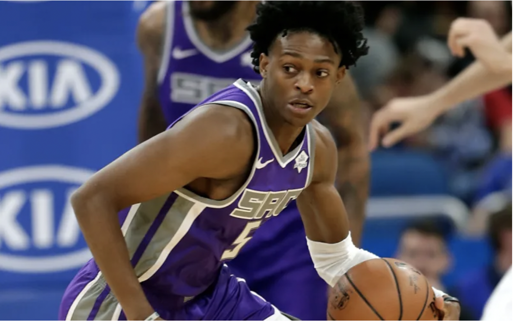

Need for Speed: How an Increased Pace is Paying Dividends for the Sacramento Kings
Entering the 2018-2019 NBA season, few fans had any expectations for the Sacramento Kings; after all, the team hasn’t achieved a winning season since 2005, and they recently jettisoned their star, Demarcus Cousins, to…